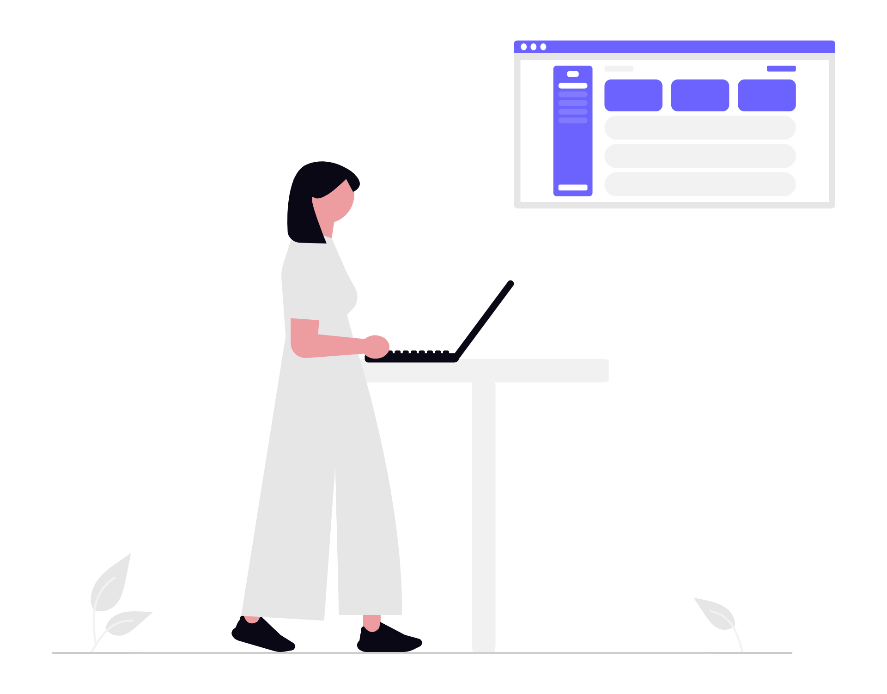
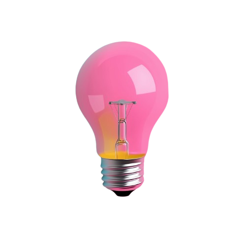
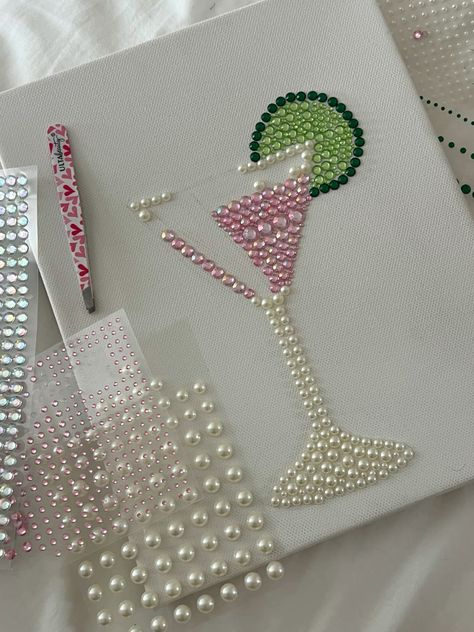

A little info about me

Hi, I'm Ashley,

a Junior Developer on a mission to craft beautiful and functional digital spaces. I believe in stepping beyond the familiar horizon to turn bold code into meaningful experiences.
Hi, I'm Ashley,

a Junior Developer on a mission to craft beautiful and functional digital spaces. I believe in stepping beyond the familiar horizon to turn bold code into meaningful experiences.- I prioritize functional design, ensuring every pixel serves a purpose with aesthetic quality. My commitment to excellence drives me to constantly refine my skills and deliver exceptional results.
Away from code, you'll find me
🖌️ exploring DIYs
 ,
watching K-dramas
,
watching K-dramas
 ,
exploring the new
,
exploring the new
.png) ,
or
📂 curating collections
.
,
or
📂 curating collections
.